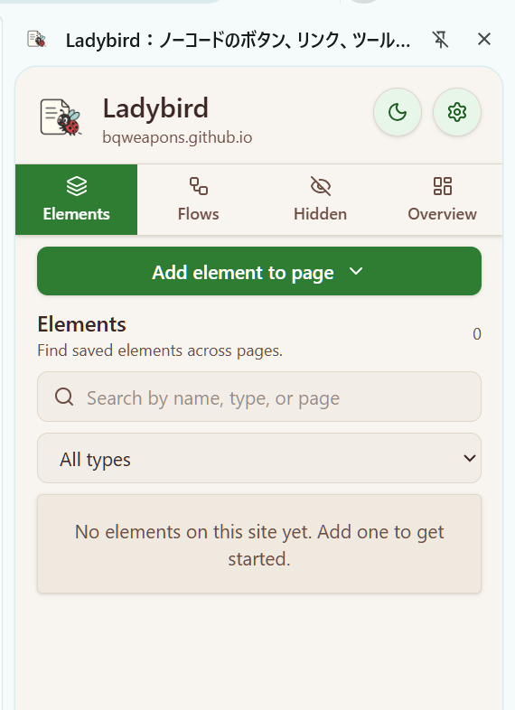
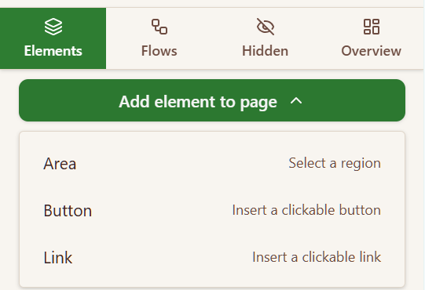
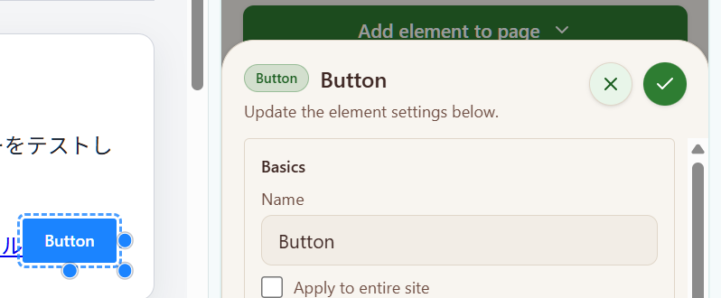
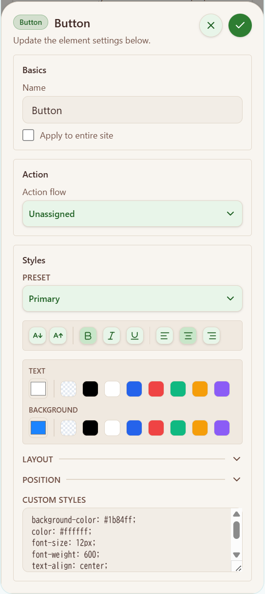
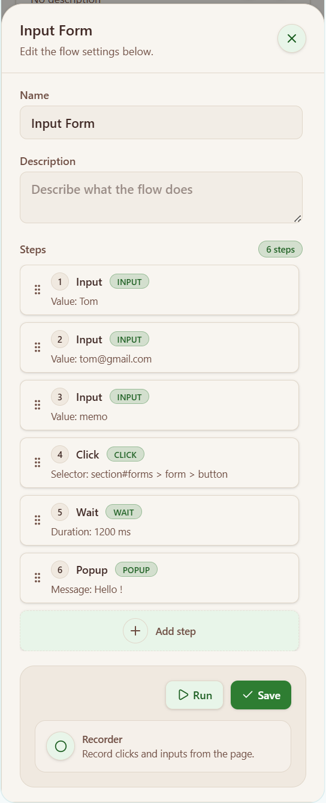
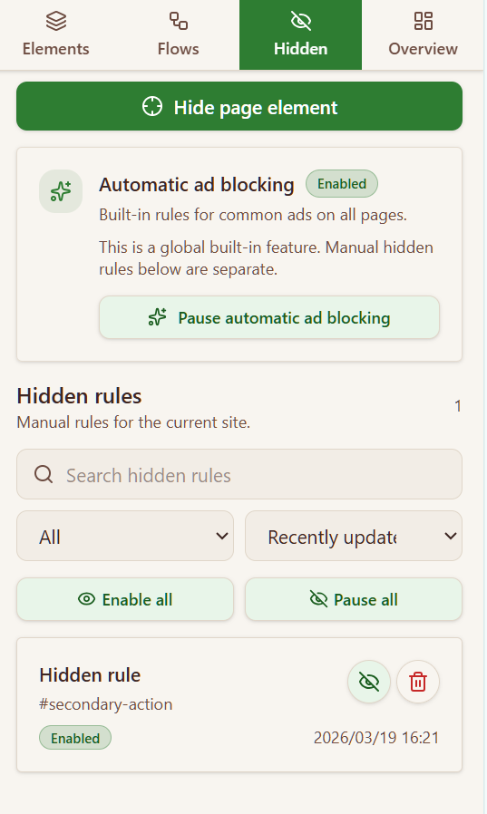
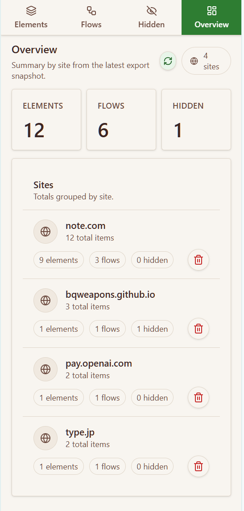
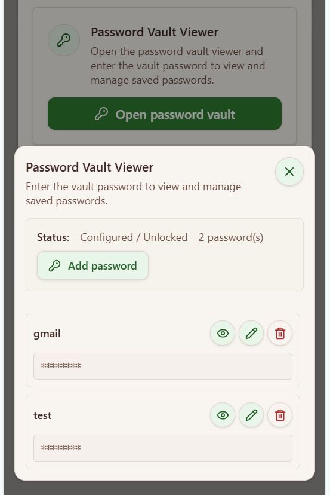
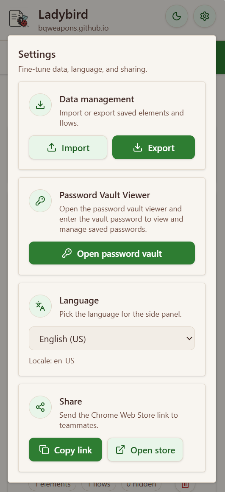

1
打开你想修改的网页。
不管你是想加按钮、跑流程，还是隐藏某个区域，都先进入你真正要操作的那个页面。
Ladybird 适合这几类人: 经常重复操作网页的人，想把页面干扰内容去掉的人，以及想在常用网站里加上自己专属快捷入口的人。
核心流程一直都很简单: 打开目标网页，打开侧边栏，添加你需要的内容，然后保存并回到页面确认结果。
不管你是想加按钮、跑流程，还是隐藏某个区域，都先进入你真正要操作的那个页面。
这样你可以一边看页面，一边切换 Elements、Flows、Hidden、Overview、Settings 这些标签页。

想在页面上放内容用 Elements，想自动执行一串操作用 Flows，只想把东西藏起来就用 Hidden。

保存后，你可以立刻确认页面上是否出现了新内容、隐藏是否生效，或者流程是否可以直接运行。

对新用户来说，先知道“我能解决什么问题”，比先记住术语更重要。
把常用入口、说明文字或自定义区域直接放到你正在使用的网站里。
把经常重复的一串网页操作变成以后可以反复运行的步骤。
把横幅、侧栏、重复提示和干扰区域从页面里去掉。
把密码单独保存，再绑定到流程里，而不是直接写在自动化步骤里。
把保存好的站点配置带到另一台设备，或者发给同事继续使用。
不需要一开始就全部学会。先用能解决当前问题的那个标签页，之后再把其他能力叠加上去就够了。
适合你想在页面里加按钮、链接、提示框或一个自定义区域的时候。
使用提醒: 尽量选择结构稳定的位置，这样网站改版后也更不容易失效。

适合点击、输入、等待、分支判断、确认弹窗或多步骤自动化。
使用提醒: 如果网站页面经常变化，流程里的目标位置可能需要重新调整。

适合横幅、重复提示、侧栏模块、干扰块这类“看着烦但又经常出现”的内容。
使用提醒: 手动隐藏规则是站点级的，自带广告隐藏是全局功能，两者不是同一套东西。

适合在清理、导出、排查之前，先快速掌握自己已经保存了什么。
使用提醒: 在导入、导出或批量删除前，先看一眼 Overview 会更稳妥。

适合登录和敏感输入场景，既想复用，又不想把密码直接留在流程步骤里。
使用提醒: 如果忘记 Vault 密码，原有 Vault 数据无法恢复，只能重置后重新绑定。

适合换电脑、共享配置、导出备份，或者调整侧边栏语言的时候。
使用提醒: 导出的文件由你自己保管，尤其是包含 Vault 数据时更要注意。

每个例子都按“问题是什么 → Ladybird 怎么做 → 最后得到什么结果”来说明。
你总是在后台工具里经过好几次点击，才能进入同一个报表页面。
在 Elements 里直接加按钮或链接，把快捷入口放到你最常用的页面上。
原本要多步才能到的页面，变成在当前页面里一键就能打开。
同样的输入、点击和等待动作，经常在一个或多个页面里重复发生。
在 Flows 里组合 click、input、wait，必要时再加数据源步骤。
原本人工重复的操作，变成一套可以保存、复用、再运行的流程。
你想自动输入登录信息，但又不希望把密码明文塞进流程配置里。
先把密码存进 Password Vault，再把这个条目绑定到对应的输入步骤。
你既保留了复用的便利，也避免把密码直接留在普通流程文本里。
页面能用，但太吵，横幅、侧栏和重复提示让主要工作区域变得不清爽。
在 Hidden 里添加规则隐藏干扰区域，需要时再单独开启自动广告隐藏。
页面会更干净，真正有用的内容留下来，注意力也更集中。
Ladybird 的重点是实用和透明。真正的限制大多来自目标网站本身会变化，而不是因为它偷偷把数据传到云端。
Elements、Flows、Hidden 和相关设置，除非你主动导出，否则都留在浏览器本地。
密码不会被当成普通流程文本对待，而是走单独的安全保存方式。
如果你导出了配置文件，尤其是包含 Vault 数据时，文件本身的安全需要你自己负责。
如果网站 DOM 变化频繁、CSP 很严格，或页面里有跨域 iframe，放置和自动化都可能变得不稳定。
如果页面加载不同、目标位置变了，或者保存的选择器不再匹配，流程就可能暂停、失败或需要修改。
如果你是想在页面上放一个看得见的东西，就先用 Elements。如果目标是自动执行一串步骤，就先用 Flows。
常见原因是页面改版了、加载顺序不一样，或者保存时选中的目标在当前页面里已经找不到了。
因为密码应该和普通文本分开处理。Ladybird 默认鼓励用 Password Vault 来管理这类敏感值。
网站结构、位置或标签变了，原先保存的目标就可能不再对应当前页面，所以需要重新选取或编辑。
在 Settings 里导出 JSON，再到另一台电脑里导入。如果你还需要密码，也可以把 Vault 数据一起迁移。
已有 Vault 数据无法直接恢复，只能重置 Vault，然后把需要的密码和绑定关系重新建立。
如果你需要商店链接、对外展示页面或隐私政策，可以从这里进入。
如果你想安全地试元素注入、隐藏规则、流程和数据源行为，可以用这些页面。